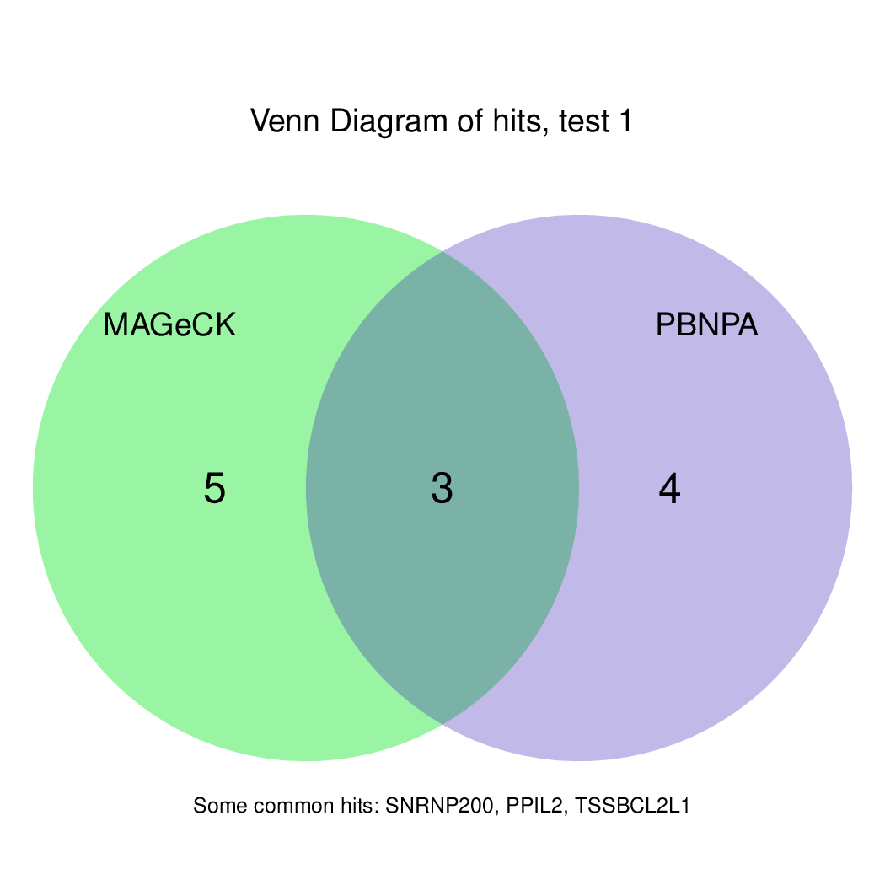

Tutorial
Running CASPR is extremely easy and convenient to analyze CRIPR-Cas9 screens using pgRNAs. The test data folder contains two brief user cases to go through all steps. Simply copy the scripts provided in each user case to visualize the demos.
Get started: Activate Conda Environment
If it is your first time with CASPR, please follow the Installation Guide.
After finishing with the installation, you should activate the Conda Environment. Please, make sure you do it every time you work with CASPR:
# Activate for Linux
source activate caspr
# Activate for macOS
conda activate caspr
Users of IBU Cluster
Users of IBU cluster (Interfaculty Bioinformatics Unit, University of Bern) will also download CASPR following the Installation Guide.
However, you do not need to poceed with the installation of a Conda Environment. Instead, you can load the required software packages, which are all installed in the cluster.
Please, make sure you load them every time you work with CASPR:
# Import software: only for users of IBY cluster
module add UHTS/Analysis/fastx_toolkit/0.0.13.2
module add UHTS/Aligner/STAR/2.6.0c
module add UHTS/Analysis/samtools/1.4
module add R/3.5.1
module add UHTS/Quality_control/mageck-vispr/0.5.4
User Case 1: Analysis of a CRISPR Screen Using pgRNAs
This user case shows how to analyse a CRISPR screen with the following features:
- Library of pgRNAs
- Two time points: week zero and week four
- Only one replicate per time point
- Start analysis from the raw sequencing data
To compute the analysis, it is essential to have:
- Paired reads
- Text file with a library of pgRNAs
- Text file with the experimental design (control and treated samples)
Additionally, you may provide a text file with positive, negative and neutral controls.
Let's go to the user case test data folder:
cd $HOME/CASPR/testdata/pgrna
Let's check that the data is available in the expected formats:
# Check that the data has been sucessfully downoaded
ls -al .
# Display the content of the files to see the format
cat expdesign.txt
head library.txt
head controlfile.txt
zcat < week0.1_1.fastq.gz | head
Now you are ready to run the example. If you are not sure about the commands, you can copy them immediately from here:
# Create output directory
mkdir results
# Run the tool
CASPR \
-f "week0.1_1.fastq.gz, week4.1_1.fastq.gz" \
-r "week0.1_2.fastq.gz, week4.1_2.fastq.gz" \
--library library.txt \
-y 0.25 -k \
--output-dir ./results \
--controls controlfile.txt \
--exper-design expdesign.txt
Note that, if you copy the commands from above, you are changing two of the default parameters of CASPR:
- the FDR threshold
-ywill be set to 0.25, and - the intermediate files will be kept.
Please, make sure you keep the intermediate files to follow the second part of the user case.
Results
After a few minutes, the outputs should appear in your computer. At this point, you can open them and see if they are as expected. The expected outputs are found in:
ls results/outputs
These are the outpus generated:




Moreover, you can benefit from VISPR to get interactive results on you data. Please try the following:
# Run VIPR server
vispr server ./results/config* --port 5000
# Ctrl-C to exit the server
Users of IBU Cluster
VISPR installation in the IBU cluster might not be updated. Therefore, users of this cluster will need to run an additional command to see the outputs:
# Take VISPR from jpijuan Conda Environment
alias vispr="/home/jpijuan/miniconda3/envs/vispr/bin/vispr"
# Run VIPR server
vispr server ./results/config* --port 5000
# Ctrl-C to exit the server
VISPR is a web-based interactive server that creates a webpage with a nice visualization of the results. If you are working from a cluster, you will also need to run this command locally on your computer:
ssh -f {user}@binfservms01.unibe.ch -L 5000:localhost:5000 -N
Now, check the webpage on a browser and enjoy visualizing the data.
If you are still curious about other options of CASPR, let's try to get more
information on the unmapped reads. This can be done esily just by adding the tag
-i to the previous command. Furthermore, if you kept the intermediate files
with the -k argument, neither the previous nor the next steps will be
necessary anymore (only mapping).
You can find a solution to quickly finish the user case here:
CASPR \
-f "week0.1_1.fastq.gz, week4.1_1.fastq.gz" \
-r "week0.1_2.fastq.gz, week4.1_2.fastq.gz" \
--library library.txt \
-i --start map --pause map -y 0.25 -k \
--output-dir ./results \
--controls controlfile.txt \
--exper-design expdesign.txt
Check that everything worked out. Your outputs should look similar to:


If you arrived here, you finished the first user case successfully!
User Case 2: Analysis of a CRISPR Screen Using sgRNAs
This user case shows how to analyse a CRISPR screen with the following features:
- Library of sgRNAs
- Two time points: week zero and week four
- Two replicates per time point
- Start analysis from the raw sequencing data
To compute the analysis, it is essential to have:
- Single-read sequencing
- Text file with a library of sgRNAs
- Text file with the experimental design (control and treated samples)
Moreover, you may provide a text file with positive, negative and neutral controls, if interested.
In this user case, we want to analyse the two replicates separately in two different tests, and we want to perform a third test using the replicates together.
Let's go to the user case test data folder:
cd $HOME/CASPR/testdata/sgrna
Before starting the tests, check that the data is available in the expected formats. Pay special attention on the experimental design file, which allows to obtain the results as required:
cat expdesign.txt
head library.txt
head controlfile.txt
zcat < week0.1.fastq.gz | head
At this point, you are probably ready to try the analysis yourself. To get nicer visualization of the outputs, it is recommended to use an FDR threshold of 0.25.
If you need further help, you can also use these commands:
# Create output directory
mkdir results
# Run the tool
CASPR \
-f "week0.1.fastq.gz, week0.2.fastq.gz, week4.1.fastq.gz, week4.2.fastq.gz" \
--library library.txt \
-y 0.25 \
--output-dir ./results \
--controls controlfile.txt \
--exper-design expdesign.txt
Results
Quickly, the outputs should appear in your computer. You can open them and see if they look as expected. The expected outputs are found in:
ls results/outputs
These are the outpus generated:


Finally, let's perfom the test again using an FDR threshold of 0.1. For that, you do not need to execute all the previous steps, only the assessment of gene significance.
It can be done like this:
CASPR \
--start test -y 0.1 -k \
--output-dir ./results \
--controls controlfile.txt \
--exper-design expdesign.txt
The results should be exactly the same as above, but fewer hits are displayed in the plots. This option ensures that you can perform analyses of CRISPR screens not only starting rom the raw sequencing data, but also beginning from a table of read counts.
If you kept the intermediate files in this last step, you can visualize again the results with VISPR:
# Run VIPR server
vispr server ./results/config* --port 6000
# Ctrl-C to exit the server
Users of IBU Cluster
VISPR installation in the IBU cluster might not be updated. Therefore, users of this cluster will need to run an additional command to see the outputs:
# Take VISPR from jpijuan Conda Environment
alias vispr="/home/jpijuan/miniconda3/envs/vispr/bin/vispr"
# Run VIPR server
vispr server ./results/config* --port 6000
# Ctrl-C to exit the server
Also keep in mind that, if you work from a cluster, you will need to copy the following line locally on your computer in order to see the results:
ssh -f {user}@binfservms01.unibe.ch -L 6000:localhost:6000 -N
The data should be already available at this webpage.
Now that you arrived here, you are totally ready to use CASPR with your CRISPR data. Enjoy!